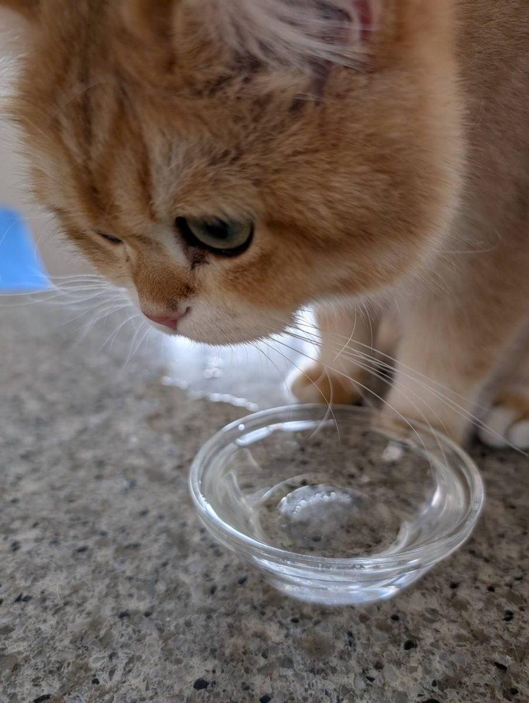
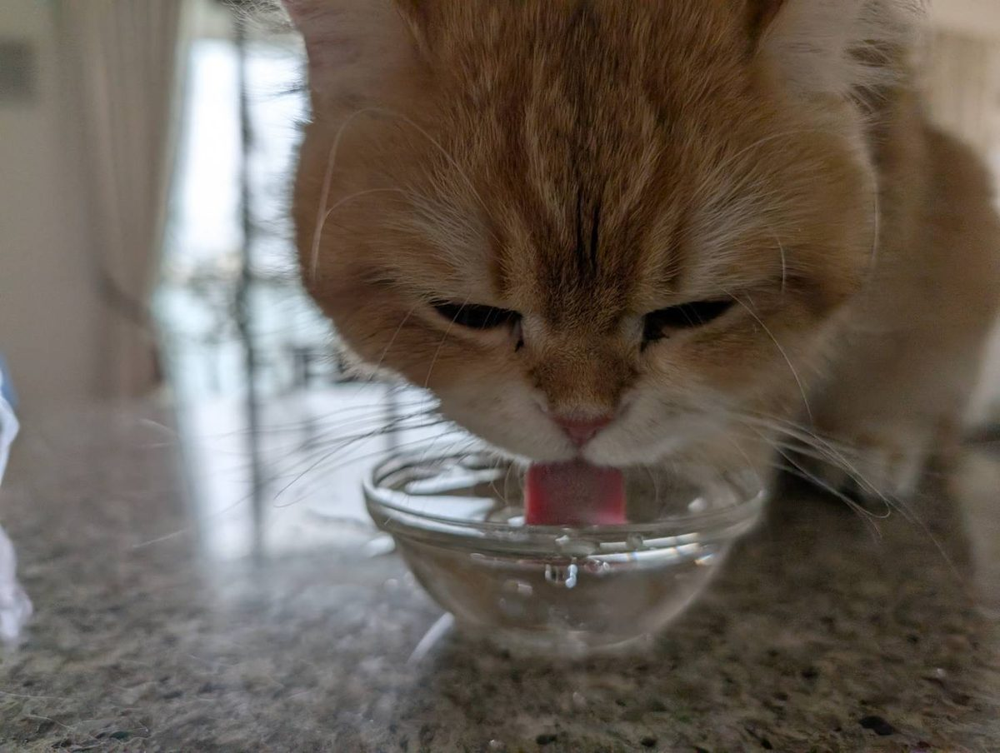
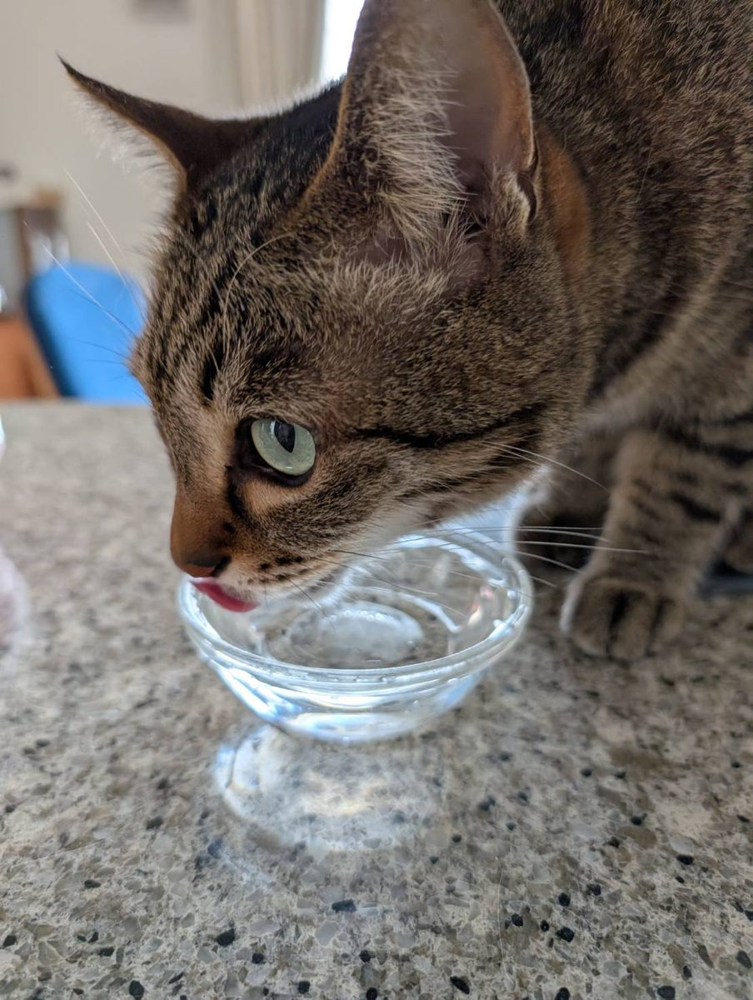

01
ペットの飲み水に
ネコちゃんの飲み水として、りふれウォーターを出した写真です。



毎日の飲み水・飲み物をつくる水として。
毎日の飲用や調理で使う水として、幅広い場面で。
日常の飲み水として。
お茶やコーヒーなど、飲み物をつくる水として。
災害時に備える飲料水として保管し、断水時の飲み水や調理用水として活用します。防災・災害時
炊飯・だし・スープ・食材の下ごしらえなど、毎日の調理に使う水として。
実際にお使いの方から寄せられた写真です。
ネコちゃんの飲み水として、りふれウォーターを出した写真です。




りふれの方が色が濃く出ました!塩素は除去したほうが味はいい。
紅茶専門店でのご利用
4匹中、3匹は好んで飲んでくれています。
帰ってお水出したら、速攻飲みにきました。
ネコちゃんの飲み水に使った方
※お客様の声は個人の感想です。茶葉・抽出条件などによって、色や味は変わります。
料理や飲用など、日常生活での活用シーンを紹介するページです。味や香りなどの感じ方には個人差があります。健康効果や疾病への効果を示す表現は行わず、飲用・調理での使用用途として掲載します。